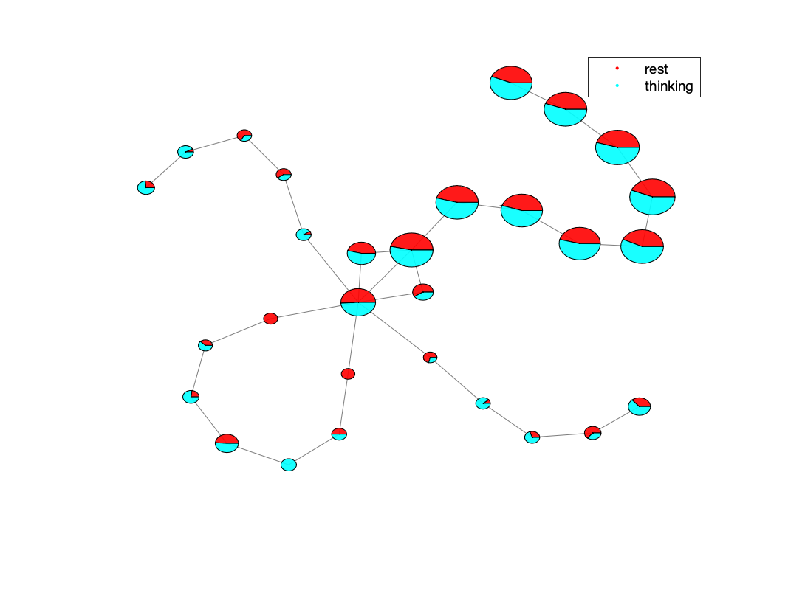

Tutorial 3: Running Mappers on fMRI data
In this tutorial, we will run the Mapper algorithm on fMRI data. We expect that you have gone through the previous tutorials and have a basic understanding of the Mapper algorithm.
Let’s say that you have a dataset of fMRI data of 1 participant performing a task over two MRI sessions. You analyzed your data with fmriprep and xcpengine. Now, your xcpengine process generated a cohort.csv file with the following columns, using the schaefer400x7 parcelation atlas. The file looks like this:
id0,id1,id2,path,TR
sub-1,task1,schaefer400x7,sub-1_task1_schaefer400x7_ts.1D,0.72
sub-1,task2,schaefer400x7,sub-1_task2_schaefer400x7_ts.1D,0.72
The path column contains the path to the timeseries data, and the TR column contains the repetition time of the fMRI data.
In this tutorial, we will run the Mapper algorithm on the fMRI data of the participant for both sessions.
Step 1. Mappers configuration
Let’s say we want to analyze the Mapper graphs for the fMRI data of the participant. We do not know which parameters to use for the Mapper algorithm, so we have to run the DeMapper toolbox to generate all of the Mapper graphs for different parameters.
We will generate the following configuration:
{
"preprocess": [
{ "type": "drop-nan" },
{ "type": "drop-lowvar", "var": 1e-2 },
{ "type": "zscore" }
],
"mappers": [{
"type": "BDLMapper",
"k": [6, 8, 16, 32],
"resolution": [5, 10, 20],
"gain": [30, 40, 50, 60, 70]
}],
"analyses": [
{ "type": "plot_graph" },
{ "type": "compute_stats", "args": { "HRF_threshold": 11 } },
{ "type": "compute_temp" }
]
}
We now have new preprocessing steps: drop-nan and drop-lowvar. The drop-nan step will drop the columns or TRs with NaN values and drop rows that contain at least one NaN value. The drop-lowvar will drop the rows (ROIs) that have a variance below the set variance (0.01). You can read more about those steps in the preprocessing section <batch_preprocessing>.
There are a set of Mapper parameters that will be varied: ‘k’, ‘resolution’, and ‘gain’. Totally, we will generate 4x3x5=60 Mapper configurations.
The analysis step compute_stats now contains extra arguments. This HRF_threshold will set generate new stats. Check the analysis section <batch_analysis> for more details.
Step 2. Running DeMapper CLI
Putting all the files together, we can set up the script to run the DeMapper toolbox:
ARGS="cohort_csv='`pwd`/tutorials/tutorial3/cohort.csv';"
ARGS="$ARGS config_path='`pwd`/tutorials/tutorial3/mappers.json';"
ARGS="$ARGS output_dir='`pwd`/results/tutorial3_mappers';"
ARGS="$ARGS data_root='`pwd`/tutorials/tutorial3/';"
matlab -nodesktop -r "$ARGS run('code/analysis/run_main.m')"
Then we can run the above command:
./tutorials/tutorial3/run_mappers.sh
# Output:
# ...
# Total mapper errors: 0
The script might take a while to generate all the Mapper graphs. You can check the status of the Mapper runs by running:
tail -f results/tutorial3_mappers/status.csv
Warning
We will expect to have 120 total Mappers generated (60 for each session). This script will take too long to finish, so we will have to run it in parallel instead.
Step 3. Running DeMapper CLI in parallel
Let’s modify the above script to tell the DeMapper toolbox to generate the Mappers in parallel. Also, we would like to not regenerate the ones that we already have. We will use the –skip argument to skip the already generated Mappers.
ARGS="cohort_csv='`pwd`/tutorials/tutorial3/cohort.csv';"
ARGS="$ARGS config_path='`pwd`/tutorials/tutorial3/mappers.json';"
ARGS="$ARGS output_dir='`pwd`/results/tutorial3_mappers';"
ARGS="$ARGS data_root='`pwd`/tutorials/tutorial3/';"
ARGS="$ARGS data_root='`pwd`/tutorials/tutorial3/';"
# new arguments
ARGS="${ARGS} poolsize=8;" # generate 8 parallel workers
ARGS="${ARGS} rerun_uncomputed=1;" # Rerun Uncomputed
matlab -nodesktop -r "$ARGS run('code/analysis/run_main.m')"
Then we can run the above command:
./tutorials/tutorial3/run_mappers_parallel.sh
# Output:
# ...
# Total mapper errors: 0
One could analyze the results, as we did in the previous tutorials.
Step 4. Generate task graphs
Let’s say that we have some task information that is consistently different throughout the sessions. We want to see how those datapoints during the task are differently represented in the Mapper graph.
For example, during each session, the participant performed a task that was divided into 2 conditions: rest and thinking. From our task design we know during each session when the participant was in the rest and thinking conditions. We can supposedly generate the task CSV files for each session.
head tutorials/tutorial3/sub-1_task1.csv
# Output:
# task_name
# rest
# rest
# rest
# rest
# rest
# thinking
# thinking
# thinking
# thinking
head tutorials/tutorial3/sub-1_task2.csv
# Output:
# task_name
# thinking
# thinking
# thinking
# thinking
# thinking
# thinking
# rest
# rest
# rest
Note
The task CSV files contain the task_name column that contains the task condition for each TR.
Now we can create a new cohort file that provides the task information for each session:
id0,id1,id2,path,TR,task_path_CONDITION
sub-1,task1,schaefer400x7,sub-1_task1_schaefer400x7_ts.1D,0.72,sub-1_task1.csv
sub-1,task2,schaefer400x7,sub-1_task2_schaefer400x7_ts.1D,0.72,sub-1_task2.csv
Warning
The name of the task column is very important. It has to be of the format task_path_<LABEL>, where the <LABEL> can be any string. This label is referenced in the Mapper configuration file.
Now we can tell Mapper to generate the task graphs for each session. We will update the configuration file by adding the plot_task analysis step:
{
"preprocess": [
{ "type": "drop-nan" },
{ "type": "drop-lowvar", "var": 1e-2 },
{ "type": "zscore" }
],
"mappers": [{
"type": "BDLMapper",
"k": [6, 8, 16, 32],
"resolution": [5, 10, 20],
"gain": [30, 40, 50, 60, 70]
}],
"analyses": [
{ "type": "plot_graph" },
{ "type": "compute_stats", "args": { "HRF_threshold": 11 } },
{ "type": "compute_temp" },
{ "type": "plot_task", "args": { "name": "CONDITION" } }
]
}
Notice the new plot_task analysis step. The args field contains the name field that references the task column in the cohort file.
Note
You can have multiple plot_task analysis steps in the configuration file. Each plot_task analysis step will generate a different task graph.
Now we can update the script to generate the new task plots:
ARGS="cohort_csv='`pwd`/tutorials/tutorial3/cohort_wtask.csv';"
ARGS="$ARGS config_path='`pwd`/tutorials/tutorial3/mappers_wtask.json';"
ARGS="$ARGS output_dir='`pwd`/results/tutorial3_mappers_wtask';"
ARGS="$ARGS data_root='`pwd`/tutorials/tutorial3/';"
ARGS="${ARGS} poolsize=8;" # generate 8 parallel workers
matlab -nodesktop -r "$ARGS run('code/analysis/run_main.m')"
Then we can run the above command:
./tutorials/tutorial3/run_mappers_wtask.sh
# Output:
# ...
# Total mapper errors: 0
Warning
Since we are generating a new analysis type, we need to generate the Mappers again. We can easily do that by changing the output directory.
Once the script is done, we can check the results in the results/tutorial3_mappers_wtask folder.
ls results/tutorial3_mappers_wtask | cat
# Output:
# status.csv
# sub-1
ls results/tutorial3_mappers_wtask/sub-1 | cat
# Output:
# task1
# task2
ls results/tutorial3_mappers_wtask/sub-1/task1/schaefer400x7
# BDLMapper_16_10_30 BDLMapper_16_20_70 BDLMapper_32_10_60 BDLMapper_32_5_50 BDLMapper_6_20_40 BDLMapper_8_10_30 BDLMapper_8_20_70
# BDLMapper_16_10_40 BDLMapper_16_5_30 BDLMapper_32_10_70 BDLMapper_32_5_60 BDLMapper_6_20_50 BDLMapper_8_10_40 BDLMapper_8_5_30
# BDLMapper_16_10_50 BDLMapper_16_5_40 BDLMapper_32_20_30 BDLMapper_32_5_70 BDLMapper_6_20_60 BDLMapper_8_10_50 BDLMapper_8_5_40
# BDLMapper_16_10_60 BDLMapper_16_5_50 BDLMapper_32_20_40 BDLMapper_6_10_30 BDLMapper_6_20_70 BDLMapper_8_10_60 BDLMapper_8_5_50
# BDLMapper_16_10_70 BDLMapper_16_5_60 BDLMapper_32_20_50 BDLMapper_6_10_40 BDLMapper_6_5_30 BDLMapper_8_10_70 BDLMapper_8_5_60
# BDLMapper_16_20_30 BDLMapper_16_5_70 BDLMapper_32_20_60 BDLMapper_6_10_50 BDLMapper_6_5_40 BDLMapper_8_20_30 BDLMapper_8_5_70
# BDLMapper_16_20_40 BDLMapper_32_10_30 BDLMapper_32_20_70 BDLMapper_6_10_60 BDLMapper_6_5_50 BDLMapper_8_20_40
# BDLMapper_16_20_50 BDLMapper_32_10_40 BDLMapper_32_5_30 BDLMapper_6_10_70 BDLMapper_6_5_60 BDLMapper_8_20_50
# BDLMapper_16_20_60 BDLMapper_32_10_50 BDLMapper_32_5_40 BDLMapper_6_20_30 BDLMapper_6_5_70 BDLMapper_8_20_60
ls results/tutorial3_mappers_wtask/sub-1/task1/schaefer400x7/BDLMapper_8_10_40/
# Output:
# compute_temp-TCM-mat.1D res.mat stats_core_periphery_TRs_avg.1D
# compute_temp-TCM.png stats.json stats_core_periphery_TRs_max.1D
# compute_temp-TCM_inv-mat.1D stats_betweenness_centrality.1D stats_degrees_TRs.1D
# compute_temp-TCM_inv.png stats_betweenness_centrality_TRs_avg.1D stats_rich_club_coeffs.1D
# plot_graph.png stats_betweenness_centrality_TRs_max.1D
# plot_task-CONDITION.png stats_core_periphery.1D
open results/tutorial3_mappers_wtask/sub-1/task1/schaefer400x7/BDLMapper_8_10_40/plot_task-CONDITION.png
An example of the task plot generated is seen below:
{kind=link}